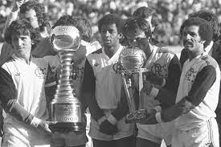

Títulos
| Competição | Títulos | Temporadas | |
|---|---|---|---|
|  | Copa Intercontinental | 1 | 1981 |
 |
Copa Libertadores da América | 3 | 1981, 2019 e 2022 |
| Recopa Sul-Americana | 1 | 2020 | |
| Copa de Ouro Nicolás Leoz | 1 | 1996 | |
| Copa Mercosul | 1 | 1999 | |
| Campeonato Brasileiro | 8 | 1980, 1982, 1983, 1987, 1992, 2009, 2019 e 2020 | |
| Copa União | 1 | 1987 | |
| Copa do Brasil | 4 | 1990, 2006, 2013 e 2022 | |
| Supercopa do Brasil | 2 | 2020 e 2021 | |
| Copa dos Campeões | 1 | 2001 | |
| Torneio Rio-São Paulo | 1 | 1961 | |
| Taça dos Campeões Estaduais Rio-São Paulo | 1 | 1956 | |
| Campeonato Carioca | 36 | 1914, 1915, 1920, 1921, 1925, 1927, 1939, 1942, 1943, 1944, 1953, 1954, 1955, 1963, 1965, 1972, 1974, 1978, 1979, 1979 (especial), 1981, 1986, 1991, 1996, 1999, 2000, 2001, 2004, 2007, 2008, 2009, 2011, 2014, 2017, 2019 e 2020 |